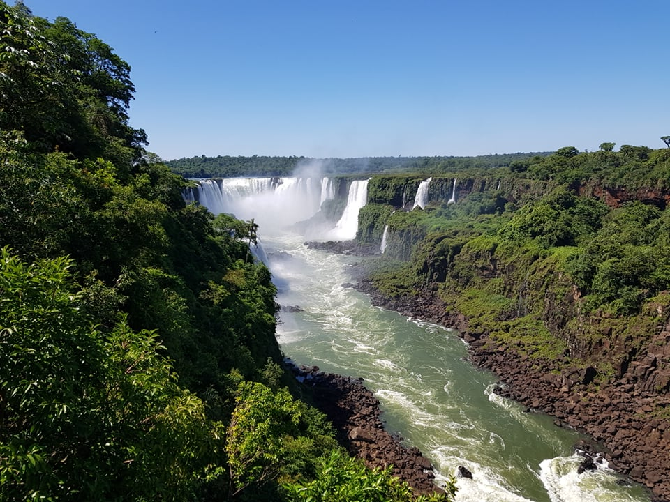
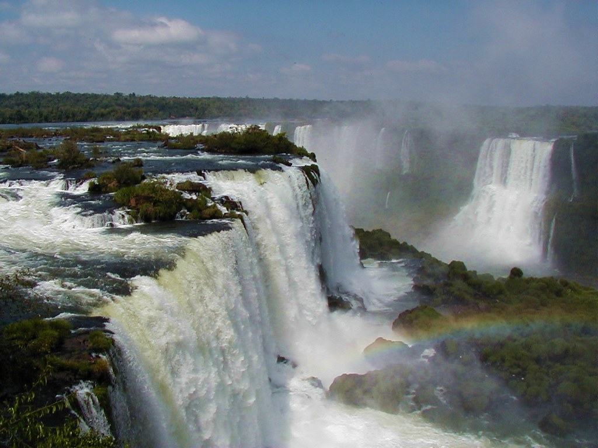
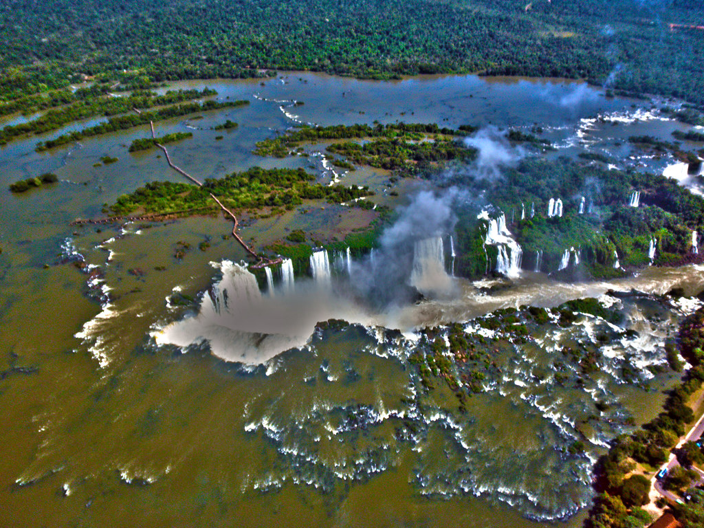
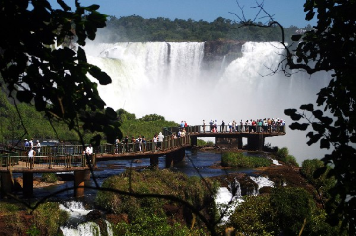
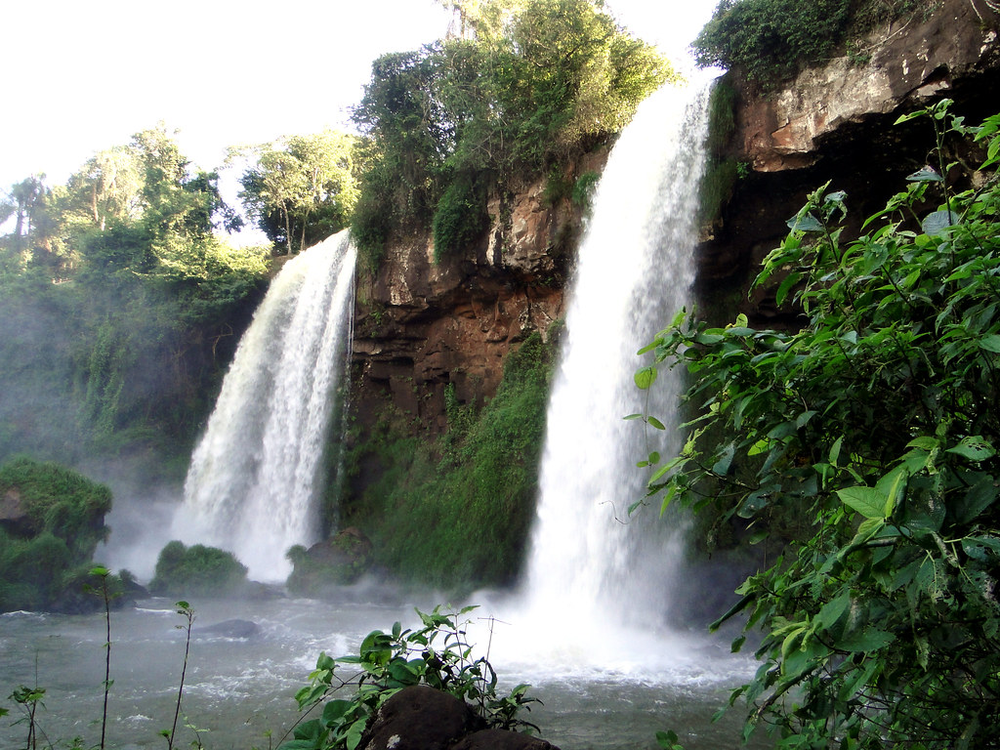
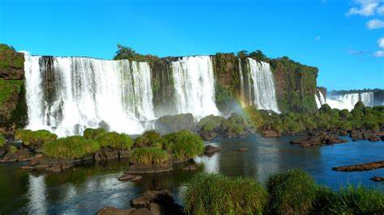
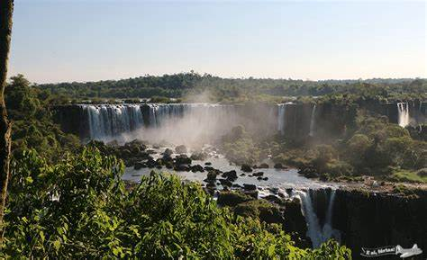
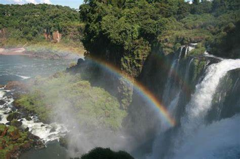

Home
Sobre
Fotos
Lazer
Login
Registre-se
Login
Registre-se
ÁLBUM DE FOTOS

Foto extraída do site:
Dri Viaro

Foto extraída do site:
Get Your Guide

Foto extraída do site:
Flickr

Foto extraída do site:
Meu Sonho

Foto extraída do site:
Flickr

Foto extraída do site:
Pixabay

Foto extraída do site:
Eai, Férias!

Foto extraída do site:
Wikitravel
Foto extraída do site:
Flickr